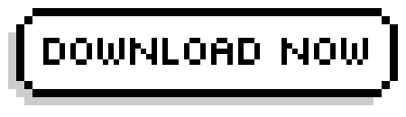

PyMuse is a simple music player made in Python and PyQT5.
It is also free and open source and can be modified to your heart's content.
To learn more, click on the documentation.
Source Code. System Requirements. FAQ. About the developers
This program contains free software under the GPL-3 license. The complete list of software, including links to full source code, can be found here.
This license guarantees the freedom to share as much as one wishes so long as you allow others to share accordingly and pay respects to where you have obtained the work, forks and mods of PyMuse are very much encouraged.